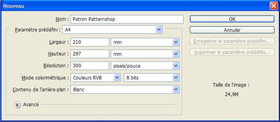
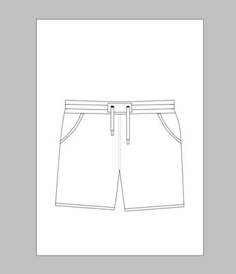
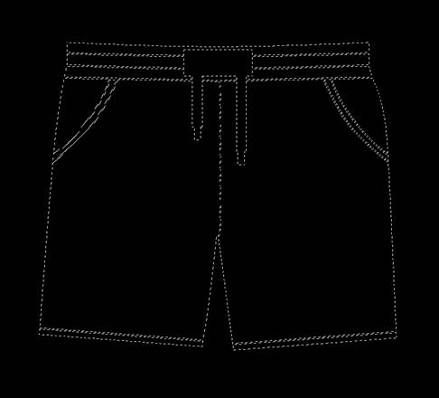
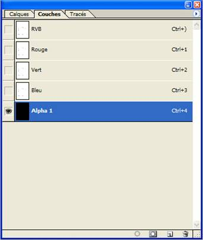
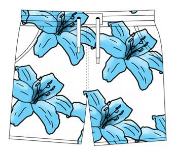

Requiert (c) Adobe Photoshop
Ouvrez un nouveau document dans Photoshop ( + N) de la taille de votre document de sortie.

Attention, la résolution est différente si le document est destiné à l’impression : 300dpi
ou si il est destiné au web : 72dpî.
Dessinez votre patron ou importez le depuis un autre logiciel (illustrator, etc.)

Avec l’outil baguette magique, sélectionnez les zones du patron où vous souhaitez voir apparaître le réseau,
Puis créez une nouvelle couche (par défaut nommée Alpha 1) dans la fenêtre Couches :


Supprimez votre sélection sur cette couche de manière à créer le masque (Suppr) :
Les parties blanches révèlent votre réseau, les parties noires le masquent.

Désélectionnez (+D) et enregistrez votre patron au format Tiff.
Votre patron est prêt à être exploité sur Patternshop !
